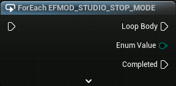
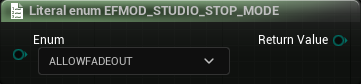

Unreal Integration 2.02
Automatically generated methods for working with FMOD and Unreal Enums.
Methods:
Converts a byte to an EFMOD_STUDIO_STOP_MODE.
EFMOD_STUDIO_STOP_MODE ByteToEnum(
byte Byte
);
See Also: EFMOD_STUDIO_STOP_MODE.
Returns every value in the EFMOD_STUDIO_STOP_MODE enum.

EFMOD_STUDIO_STOP_MODE ForEachEFMOD_STUDIO_STOP_MODE();
See Also: EFMOD_STUDIO_STOP_MODE.
Returns the total number of entries in the EFMOD_STUDIO_STOP_MODE enum.
int GetNumberOfEntriesInEFMOD_STUDIO_STOP_MODE();
See Also: EFMOD_STUDIO_STOP_MODE.
Returns the value of an EFMOD_STUDIO_STOP_MODE member.

EFMOD_STUDIO_STOP_MODE LiteralEnumEFMOD_STUDIO_STOP_MODE(
EFMOD_STUDIO_STOP_MODE Enum
);
See Also: EFMOD_STUDIO_STOP_MODE.